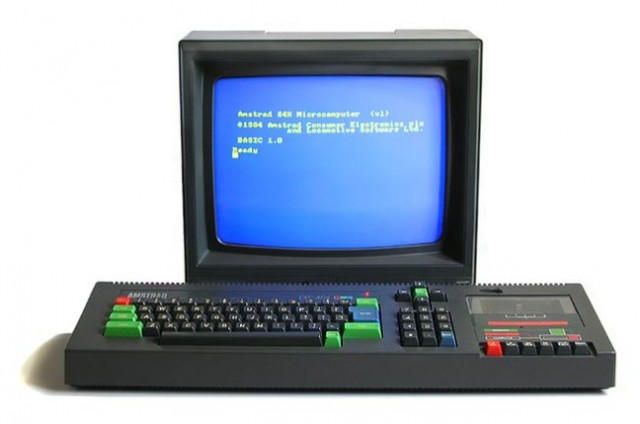

El Amstrad CPC (Colour Personal Computer) fue lanzado en 1984 por Amstrad, una empresa británica fundada por Alan Sugar. Diseñado como una computadora de bajo costo para el hogar, el CPC se convirtió en una de las plataformas más populares de su época. Con su diseño todo en uno que incluía teclado, unidad de cinta o disquetera y monitor, fue una solución práctica frente a sus competidores.
La familia CPC abarcó varios modelos, como el CPC464, CPC664 y CPC6128, que ofrecían distintas capacidades de almacenamiento. Su gama de colores y sonidos avanzados destacaron, especialmente en los videojuegos, con títulos memorables como Abu Simbel Profanation y Barbarian. A lo largo de los años, el Amstrad CPC ha mantenido un estatus especial entre los entusiastas de la informática retro gracias a su versatilidad y legado.

Y hablando sobre los emuladores, para mi hay dos:
WinAPE: Es uno de los emuladores más completos, capaz de emular la gama Amstrad Plus. Es ideal para desarrolladores gracias a su modo de depuración
WinAPE20B2.zipRetro Virtual Machine (RVM): Es un emulador versátil que permite revivir sistemas clásicos como el Amstrad CPC, ZX Spectrum, MSX-1, SG-1000 y Sega Master System en plataformas modernas como Windows, macOS y Linux. La última versión, RVM 2.1.19, incluso es compatible con Raspberry Pi. Este emulador destaca por su precisión en la emulación, soporte para múltiples sistemas y características como efectos gráficos avanzados y compatibilidad con archivos grandes
Retrovirtualmachine